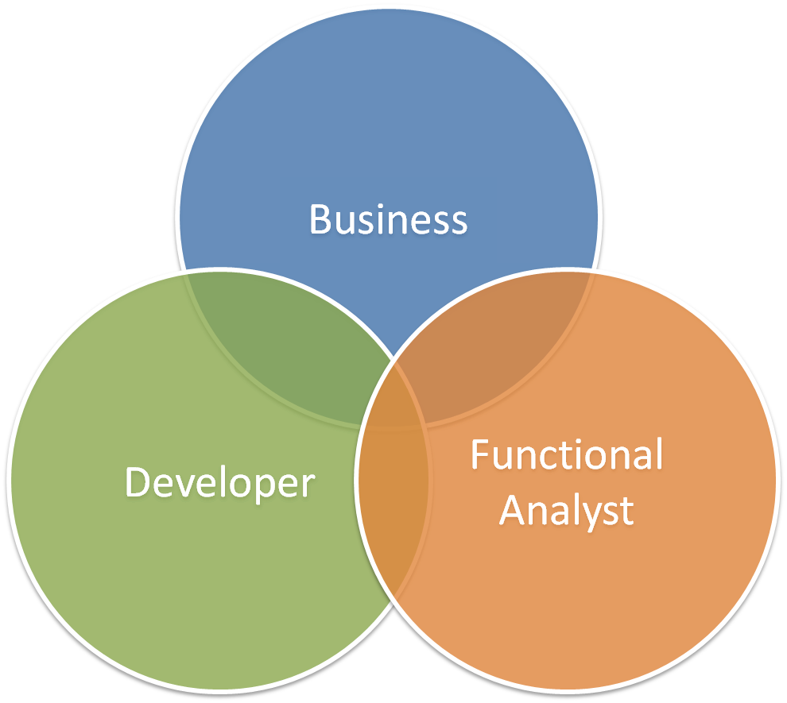
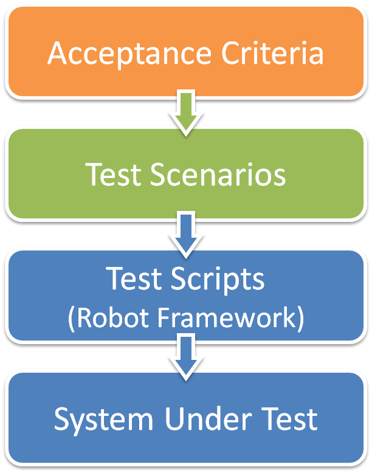
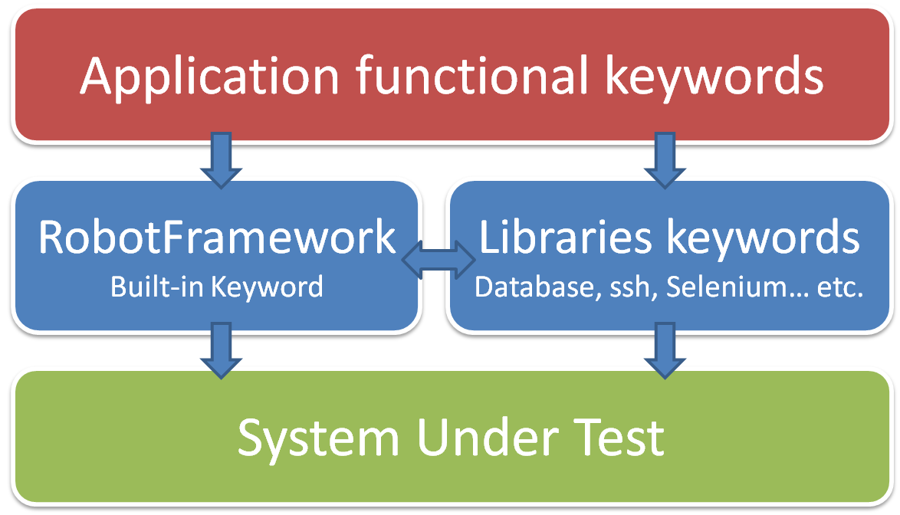
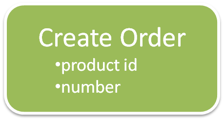
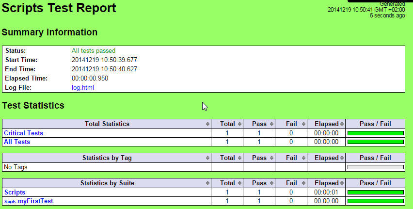

Robot Framework
Test Automation
Agenda
- Introduction
- Robot Framework concepts
- Development basics
- Libraries
- Extending Robot Framework
Introduction
Technologies
RobotFramework is a test automation framework designed for Acceptance Testing (ATDD)
- Core is written in Python
- Fully compatible with Java (through Jython)
History
- Initiated in 2005 by Nokia Siemens Network
- Open Sourced in 2008 (release 2)
- Last version 2.8.6 (July 2014)
RobotFramework concepts
Acceptance Testing / Keyword Driven
Acceptance testing
 
Keyword Driven
Keyword Driven
Example : test the creation of an order on a web application


Robot Framework development basics
Robot Framework development basics : a 1st script
Write the following code in a text file named myFirstTest.robot under "scripts" folder
*** Test Cases ***
My First Test
${current_year}= Get Time year
Should Start With ${current_year} 20
Then launch the test by running
robot.bat file. You should get a success in the report.html file :

RobotFramework development basics
Create a new test with the following content
*** Settings ***
Library OperatingSystem
Resource ..\keywords\myProjectKeywords.robot
*** Variables ***
${PATH_TO_CHECK} c:\\temp
*** Test Cases ***
Check Host Configuration
[Documentation] Check the host general config (temp folder and date)
# Check existence of c:\temp folder
Should Exists ${PATH_TO_CHECK}
Check Host Date Is 2015
*** Keywords ***
Check Host Date Is
[Documentation] Check the date of the host running this test
[Arguments] ${YEAR}
${host_year}= Get Time year
Should Be Equal ${host_year} ${YEAR}